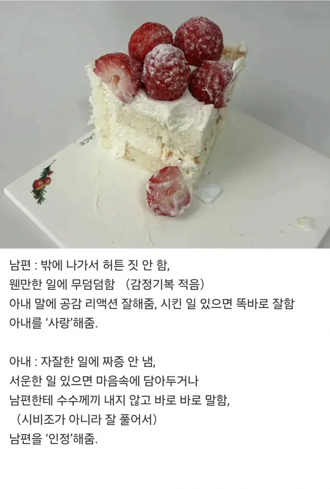

220 · 4 · 20 시간 전 · 원문

유부 개붕이들 이거 맞는것 같음?
수집 당시 댓글 4개
小熊習近平 · 11 시간 전
내 아내는 항상 날 반겨주고 좋은말만 해줌
그런데 폰에서 안 나옴
황두남 · 11 시간 전
니가 들어가면되잖아!!
봉다루 · 11 시간 전
12년차 유부남인데 위의 여자쪽 항목중
단 하나라도 하면 잘살수있다
다시한번 말하지만 셋다가 아니라 '단 하나'임
아 남자쪽은 전부다이고
엄마반찬맛도리 · 8 시간 전
우리 얘기 써놨네 ㅋㅋ
내 아내는 항상 날 반겨주고 좋은말만 해줌
그런데 폰에서 안 나옴